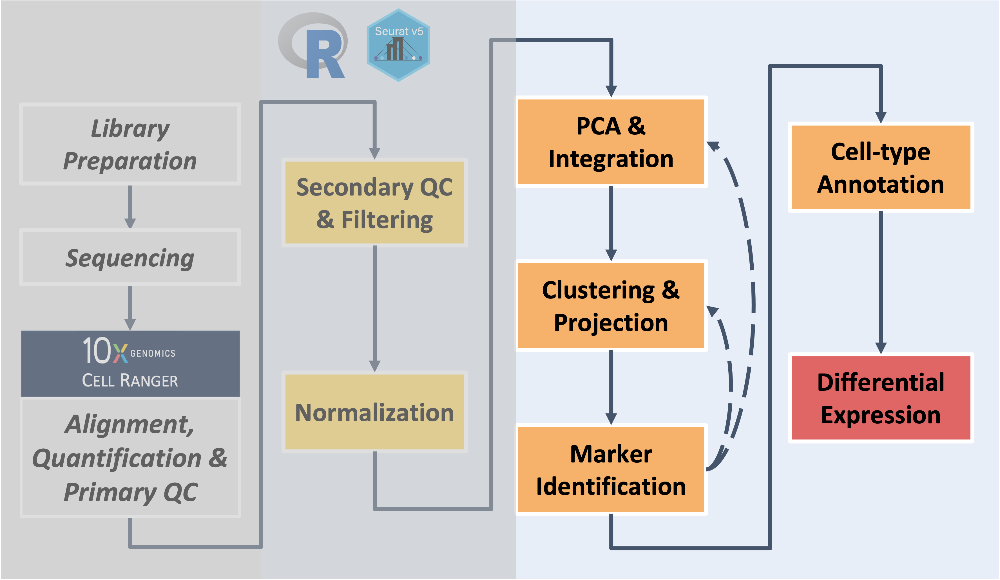

Build on the content and analysis steps covered in the workshop
sessions by working through these independent exercises. Note -
if you work on the exercises make sure to restart R session to clear out
environment before closing the window (like we have at the end of each
session) to avoid lags when logging in the next day
# =========================================================================
# Independent Exercise - Day 1 Startup
# =========================================================================
# After restarting our R session, load the required libraries & input data
library(Seurat)
library(BPCells)
library(tidyverse)
# TO ADD - loading corresponding R object for Day 1 exercises
## NOTE - BEFORE STOPPING WORK ON THE EXERCISES REMEMBER TO POWER DOWN AND RESTART R SESSION !!!!# =========================================================================
# Independent Exercise - Day 2 Startup
# =========================================================================
# After restarting our R session, load the required libraries & input data
library(Seurat)
library(BPCells)
library(tidyverse)
# Use provided copy of integrated data
geo2_so = readRDS('inputs/prepared_data/rdata/geo_so_sct_integrated.rds')
## NOTE - BEFORE STOPPING WORK ON THE EXERCISES REMEMBER TO POWER DOWN AND RESTART R SESSION !!!!## -----------------------------------------
## Round 1: try with fewer PCs included
# look at elbow plot to check PCs and alternatives to the number selected today
ElbowPlot(geo2_so, ndims = 50, reduction = 'unintegrated.sct.pca')
# select smaller value to try (we used 6)
pcs = 6
# generate nearest neighbor (graph), using selected number of PCs
geo2_so = FindNeighbors(geo2_so, dims = 1:pcs, reduction = 'integrated.sct.rpca')
# Round 2: adjust resolution after testing PCs (remember this only impacts the how the boundaries of the neighbors are drawn, not the underlying NN graph/structure)
# start with one resolution, but can see impact of changing this parameter by changing which commands are commented out/run
res = 0.2
# res = 0.4
# res = 1.0
# generate clusters, using `pcs` and `res` to make a custom cluster name that will be added to the metadata
geo2_so = FindClusters(geo2_so, resolution = res,
cluster.name = paste0('int.sct.rpca.clusters_fewer'))
# look at meta.data to see cluster labels
head(geo2_so@meta.data)
# Prep for UMAP plots by creating reduction (using the reduction name we assigned in the last step)
# Note - only want to include the `pcs` in the reduction name since `res` changes the cluster divisions but not reduction run at this step
geo2_so = RunUMAP(geo2_so, dims = 1:pcs,
reduction = 'integrated.sct.rpca',
reduction.name = paste0('umap.integrated.sct.rpca_fewer'))
# check object ot see if named reduction was added
geo2_so
# plot clustering results
post_integration_umap_clusters_testing =
DimPlot(geo2_so, group.by = 'seurat_clusters', label = TRUE,
reduction = paste0('umap.integrated.sct.rpca_fewer')) + NoLegend()
post_integration_umap_clusters_testing # look at plot
# output to file, including the number of PCs and resolution used to generate results
ggsave(filename = paste0('results/figures/umap_int_sct_clusters_',
pcs,'PC.',res,'res','.png'),
plot = post_integration_umap_clusters_testing,
width = 8, height = 6, units = 'in')
## Discard all ggplot objects currently in environment to manage memory usage
# Ok since we saved the plots as we went along
rm(list=names(which(unlist(eapply(.GlobalEnv, is.ggplot)))));
gc()
## Save a copy of the Seurat object in its current state
saveRDS(geo2_so, file = paste0('results/rdata/geo_so_sct_integrated_alt.rds'))How does the UMAP plot look when fewer PCs are used? How is the plot impacted if different resolution parameters are used?
## -------------------
## Clean up session
rm(list=names(which(unlist(eapply(.GlobalEnv, is.ggplot)))));
rm(catch_celltypes, catch_markers, geo2_catch, geo2_markers, new_metadata, top_5);
gc()
## Save copy of geo2_seo in current state to use for future exercises
saveRDS(geo2_so, file = paste0('results/rdata/geo_so_sct_integrated_alt.rds'))If stopping here - make sure to clear environement and
restart R session!!!
## -----------------------------------------
## Round 2 - choose a larger number of PCs
pcs = 20 # can use this provided value or select a different value
res = 0.8 # Set resolution (may need to test other values)
# Run code (copied from above) - outputs will use pcs and res parameters set above
# Reductions and metadata labels for clusters will be added to the existing geo2_so, with the set pcs and res values. Objects with the same name will be overwritten if code is adjusted and re-run
# generate nearest neighbor (graph) & clusters, with custom naming for metasata
geo2_so = FindNeighbors(geo2_so, dims = 1:pcs, reduction = 'integrated.sct.rpca')
geo2_so = FindClusters(geo2_so, resolution = res,
cluster.name = paste0('int.sct.rpca.clusters_more'))
head(geo2_so@meta.data)
# Prep for UMAP plots by creating reduction (using the reduction name we assigned in the last step)
geo2_so = RunUMAP(geo2_so, dims = 1:pcs,
reduction = 'integrated.sct.rpca',
reduction.name = paste0('umap.integrated.sct.rpca_more'))
geo2_soUsing the code from above, how would you generate a new ggplot named
post_integration_umap_clusters_testing that uses the larger
number of PCs and the clusters defined with the resolution you defined
in the previous code block?
# plot clustering results for new parameters
post_integration_umap_clusters_testing = {add your own code here}
## Remove ggplots and clean up environment
rm(list=names(which(unlist(eapply(.GlobalEnv, is.ggplot)))));
gc()
## Save a copy of the Seurat object in its current state to use for future exercises
saveRDS(geo2_so, file = paste0('results/rdata/geo_so_sct_integrated_alt.Rmd'))How does the UMAP plot look when more PCs are used? Was a higher or lower resolution needed to better align the cluster divisions to the structure observed in the UMAP plot compared to the resolution used in the workshop session?
# =========================================================================
# Independent Exercise - Day 3 Startup
# =========================================================================
# After restarting our R session, load the required libraries
library(Seurat)
library(BPCells)
library(tidyverse)
## NOTE - BEFORE STOPPING WORK ON THE EXERCISES REMEMBER TO POWER DOWN AND RESTART R SESSION !!!!Now that we’ve covered how to generate emperical marker genes and use a prediction tool to identify possible cell-type labels, let’s start by extending the exercise from yesterday to check what our results would look like if we had proceed with fewer or more PCs.
# Load in seurat object with your alternative clustering results from yesterday's exercises
geo2_so = readRDS('results/rdata/geo_so_sct_integrated_alt.Rmd')
# If you didn't generate your own, load the provided copy which uses XX and XX parameters
## TO ADD - copy of seurat object with "fewer" and "more" PC results added
# Check loaded object and what identities are set
geo_so
Idents(geo2_so)
## Note - in the example code, we use the results from "fewer" but can swap to "more" instead
geo2_so = SetIdent(geo2_so, value = paste0('int.sct.rpca.clusters_fewer'))## Generate cluster markers to see how that changes with new parameters
geo2_so = PrepSCTFindMarkers(geo2_so, assay = "SCT") # NOTE - this step will take some time to run
geo2_markers = FindAllMarkers(geo2_so, only.pos = TRUE)
# Create table of top 5 markers per cluster (using default ranking)
top_5 = geo2_markers %>% filter(p_val_adj < 0.01) %>% group_by(cluster) %>% slice_head(n = 5)
head(top_5, n = 10) # look at results
write_csv(top_5, file = paste0('results/tables/top5_marker_genes_fewer.csv'))After you generate markers for the “fewer” pcs option,
how do the results differ from the markers found for pcs=10
in the workshop session? What do you think would happen if you tried
this with the “more” results?
## ----------------------------------------------------
## Next - run scCATCH predictions for alternative clustering results
geo2_catch = createscCATCH(data = geo2_so@assays$SCT@counts, cluster = as.character(Idents(geo2_so)))
catch_markers = geo2_markers %>% rename('logfc' = 'avg_log2FC')
geo2_catch@markergene = geo2_markers
geo2_catch@marker = cellmatch[cellmatch$species == 'Mouse' & cellmatch$tissue %in% c('Blood', 'Peripheral Blood', 'Muscle', 'Skeletal muscle', 'Epidermis', 'Skin'), ]
geo2_catch = findcelltype(geo2_catch)
# Check predictions
geo2_catch@celltype %>% select(cluster, cell_type, celltype_score)## ------------------------------------------------------
## Use predictions to label clusters and UMAP plot
catch_celltypes = geo2_catch@celltype %>% select(cluster, cell_type)
colnames(catch_celltypes)[2] = paste0('cell_type.',pcs,'PC.',res,'res')
new_metadata = geo2_so@meta.data %>%
left_join(catch_celltypes,
by = c('seurat_clusters' = 'cluster')) # using `seurat_clusters`, which will store the most recently generated cluster labels for each cell
rownames(new_metadata) = rownames(geo2_so@meta.data) # We are implicitly relying on the same row order!
geo2_so@meta.data = new_metadata # Replace the meta.data
head(geo2_so@meta.data)
# Create UMAP plot with new cluster labels
catch_umap_plot = DimPlot(geo2_so, group.by = paste0('cell_type.',pcs,'PC.',res,'res'),
label = TRUE, reduction = paste0('umap.integrated.sct.rpca_',pcs,'PC'))
catch_umap_plot
#### Question: How did the number of pcs and/or resolution change the predictions? Do you think the predictions correspond better or worse to the cluster structure we see in the UMAP?
# Save the plot to file
# output to file, including the number of PCs and resolution used to generate results
ggsave(filename = paste0('results/figures/umap_int_catch-labeled_',
pcs,'PC.',res,'res','.png'),
plot = catch_umap_plot,
width = 8, height = 6, units = 'in')
## Clean up session
rm(list=names(which(unlist(eapply(.GlobalEnv, is.ggplot)))));
rm(catch_celltypes, catch_markers, geo2_catch, geo2_markers, new_metadata, top_5);
gc()
## (Optional) - Save copy of geo2_so
saveRDS(geo2_so, file = paste0('results/rdata/geo_so_sct_integrated_alt.rds'))
## BEFORE PROCEEDING TO THE NEXT SECTION or closing window - POWER DOWN AND RESTART R SESSION## BEFORE PROCEEDING, MAKE SURE SESSION HAS BEEN restarted and environment is clear
# After restarting our R session, load the required libraries
library(Seurat)
library(BPCells)
library(tidyverse)
# load a copy of the final Seurat object (from end of Day 3)
geo_so = readRDS('/home/workshop/damki/ISC_R/results/rdata/geo_so_sct_integrated_final.rds')
# check what identities are set for the loaded Seurat object
Idents(geo_so) # expect to see Day + Cluster labels; if different identities are set, how would you change them?
## add code to change identities if neededOnce the cluster identities are set to the combined Day + Cluster labels, generate additional DE comparisons using the provided “psuedocode” which are comments that outline what steps are expected/needed to guide adding code to complete those outlined steps.
## ---------------------------------------------------
## Further extension - how might you generate DE comparisons between D21 and D7 for all annotated clusters?
# check the unique cluster labels - how many clusters are present?
unique(geo_so$cell_type)
## Below is comments to help guide you though the process of looping through all the comparisons of interest, for all labeled clusters
## This section from the HBC materials could be a helpful reference to aid in filling in the code: https://hbctraining.github.io/scRNA-seq_online/lessons/pseudobulk_DESeq2_scrnaseq.html
# Create list(s) of pair-wise comparisons of interest between conditions, ideally specifying Case and Control
# (e.g. Day 7 vs Day 0, Day 21 vs Day 7, Day 21 vs Day 0)
# Use list of comparisons and cluster identities to loop through comparisons of interest (for standard DE comparisons) and save results to files
# Try to use an outer `for` loop step though the comparisons listed in previous step and an inner `for` loop to cycle through all the clusters
# Bonus - summarize the DE results for the comparison, choosing a reasonable set of thresholds to call the number of DE genes, & save summary to file
# Clean up session. Caution - this next command clears your environment of all objects
rm(list = ls())
gc()
## BEFORE CLOSING WINDOW - POWER DOWN AND RESTART R SESSION !!!!These materials have been adapted and extended from materials listed above. These are open access materials distributed under the terms of the Creative Commons Attribution license (CC BY 4.0), which permits unrestricted use, distribution, and reproduction in any medium, provided the original author and source are credited.
| Previous lesson | Top of this lesson | Workshop Wrap-up |
|---|